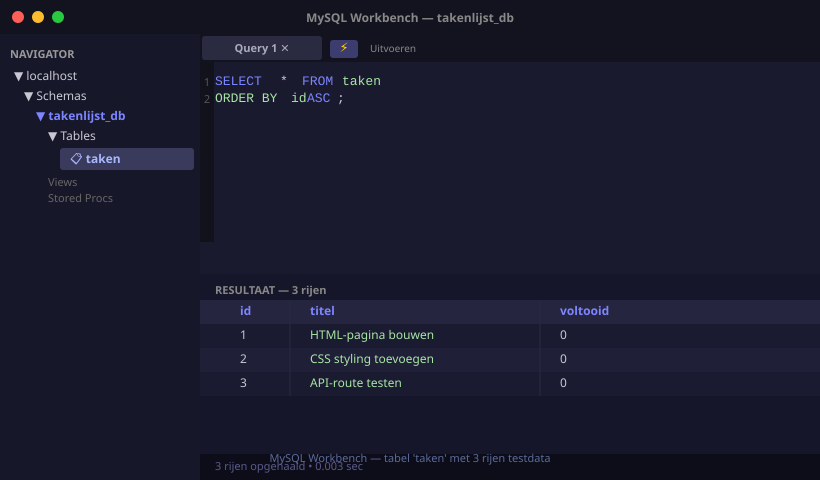
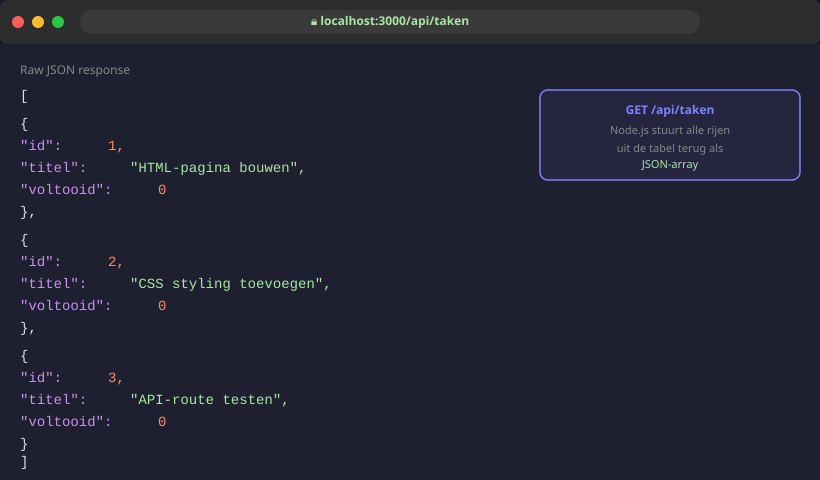
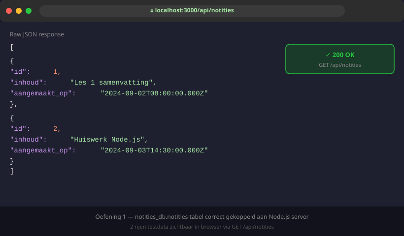

MySQL koppelen aan Node.js
- MySQL Workbench installeren en een eenvoudige database aanmaken
- Een tabel aanmaken met
CREATE TABLEen testdata invoegen - Het
mysql2-pakket installeren in een bestaand Node.js-project - Een databaseverbinding aanmaken via
mysql.createPool() - Een GET-route schrijven die alle rijen uit een tabel teruggeeft
- Een POST-route schrijven die een nieuwe rij invoegt met een
?-placeholder
Data opslaan in een array werkt zolang de server draait. Een database onthoudt alles — ook na een herstart.
21.1 MySQL Workbench installeren
MySQL Workbench is een programma waarmee je databases visueel kan beheren en SQL-queries kan schrijven.
Installatiestappen:
- Ga naar
dev.mysql.com/downloads/workbench - Download de versie voor jouw besturingssysteem
- Installeer ook MySQL Server als je dat nog niet hebt (kies de standaardinstellingen)
- Start MySQL Workbench en klik op de verbinding met
localhost
Het wachtwoord dat je kiest tijdens de installatie heb je later nodig in server.js. Schrijf het op of bewaar het veilig.
21.2 Database en tabel aanmaken
Open MySQL Workbench, klik op het bliksembol (⚡) en voer dit script uit:
-- Maak de database aan
CREATE DATABASE IF NOT EXISTS takenlijst_db;
-- Gebruik deze database
USE takenlijst_db;
-- Maak de tabel aan
CREATE TABLE IF NOT EXISTS taken (
id INT AUTO_INCREMENT PRIMARY KEY,
titel VARCHAR(200) NOT NULL,
voltooid TINYINT(1) NOT NULL DEFAULT 0
);
-- Voeg testdata in
INSERT INTO taken (titel) VALUES
('HTML-pagina bouwen'),
('CSS styling toevoegen'),
('API-route testen');Na het uitvoeren zie je takenlijst_db verschijnen in de navigator links.

21.3 mysql2 installeren
Stop de server als die draait. Ga naar de Server/-map en installeer het pakket:
cd Server
npm install mysql221.4 Verbinding maken in server.js
Voeg bovenaan server.js de databaseverbinding toe:
// Server/server.js
import express from 'express';
import mysql from 'mysql2/promise';
const app = express();
const port = 3000;
app.use(express.static('../Client'));
app.use(express.json());
// Maak een pool aan — dit beheert de verbinding met MySQL
const pool = mysql.createPool({
host: 'localhost',
port: 3306,
user: 'root',
password: 'jouwwachtwoord', // ← jouw MySQL-wachtwoord
database: 'takenlijst_db',
});
app.listen(port, () => {
console.log('Server gestart op poort: ' + port);
});Een pool houdt een aantal verbindingen klaar zodat je ze snel kan hergebruiken. Je hoeft hier niet dieper op in te gaan — gebruik het gewoon zo.
21.5 GET-route: alle taken ophalen
// GET /api/taken — geeft alle taken terug uit de database
app.get('/api/taken', async (req, res) => {
const [rijen] = await pool.execute('SELECT * FROM taken');
res.json(rijen);
});Start de server en open http://localhost:3000/api/taken in de browser. Je ziet de JSON-array met alle taken.

Uitleg van pool.execute():
const [rijen] = await pool.execute('SELECT * FROM taken');
// ↑ rijen = array van objecten, één per rij in de tabel
// ↑ pool.execute() geeft altijd [rijen, velden] terug
// ↑ jouw SQL-query21.6 POST-route: een taak toevoegen
// POST /api/taken — voegt een nieuwe taak toe
app.post('/api/taken', async (req, res) => {
const titel = req.body.titel;
if (!titel) {
return res.status(400).json({ fout: 'Titel is verplicht' });
}
// Gebruik altijd ? als placeholder — nooit tekst rechtstreeks in de query!
const [resultaat] = await pool.execute(
'INSERT INTO taken (titel) VALUES (?)',
[titel]
);
res.status(201).json({ id: resultaat.insertId, bericht: 'Taak toegevoegd' });
});? gebruiken — nooit tekst rechtstreeks in de queryAls je de tekst rechtstreeks in de SQL-query zou zetten, kan iemand kwaadaardige SQL injecteren (SQL-injectie). Door ? te gebruiken, doet mysql2 dat automatisch veilig.
21.7 Testen vanuit de front-end
// Client/app.js
// Alle taken ophalen
async function toonTaken() {
const response = await fetch('/api/taken');
const taken = await response.json();
console.log(taken); // array van taken
}
// Een taak toevoegen
async function voegTaakToe(titel) {
await fetch('/api/taken', {
method: 'POST',
headers: { 'Content-Type': 'application/json' },
body: JSON.stringify({ titel })
});
toonTaken(); // lijst opnieuw laden
}
toonTaken();- MySQL 8.0 Reference Manual — officiële MySQL-documentatie
- mysql2 op npmjs.com — de package die je gebruikt, met voorbeelden
- MySQL Workbench download — officiële downloadpagina
Oefeningen
Maak in MySQL Workbench een database notities_db met een tabel notities:
CREATE DATABASE IF NOT EXISTS notities_db;
USE notities_db;
CREATE TABLE IF NOT EXISTS notities (
id INT AUTO_INCREMENT PRIMARY KEY,
inhoud TEXT NOT NULL,
aangemaakt_op DATETIME DEFAULT NOW()
);
INSERT INTO notities (inhoud) VALUES
('Les 1 samenvatting'),
('Huiswerk Node.js');Maak daarna een Node.js-server die:
- GET
/api/notities— alle notities teruggeeft als JSON - POST
/api/notities— een nieuwe notitie toevoegt (inhouduitreq.body)

Huistaak
Opdracht: Recepten koppelen aan MySQL
Deel 1 — Database (3 punten)
- Maak een database
recepten_dbmet een tabelrecepten:
CREATE TABLE recepten (
id INT AUTO_INCREMENT PRIMARY KEY,
naam VARCHAR(150) NOT NULL,
bereidingstijd INT NOT NULL -- in minuten
);- Voeg minstens 3 recepten toe als testdata
- Controleer in Workbench dat de rijen correct zichtbaar zijn
Deel 2 — Server (4 punten)
- GET
/api/recepten— alle recepten ophalen uit de database - POST
/api/recepten— recept toevoegen (naam+bereidingstijduitreq.body), status 201 teruggeven - Gebruik altijd
?-placeholders in de SQL-query
Deel 3 — Indiening (3 punten)
- Lever de
Server/-map in zondernode_modules/ - Voeg het
.sql-bestand toe zodat de database opnieuw aangemaakt kan worden
Vragenlijst
Controleer of je de leerstof van dit hoofdstuk begrijpt.
Welk npm-pakket gebruik je om vanuit Node.js verbinding te maken met MySQL?
Waarom gebruik je ? in een SQL-query in plaats van de variabele rechtstreeks in te vullen?
pool.execute() geeft een array terug. Hoe lees je de rijen correct uit?
Wat is resultaat.insertId na een INSERT-query?
Wat is het voordeel van een createPool() tegenover een gewone verbinding?